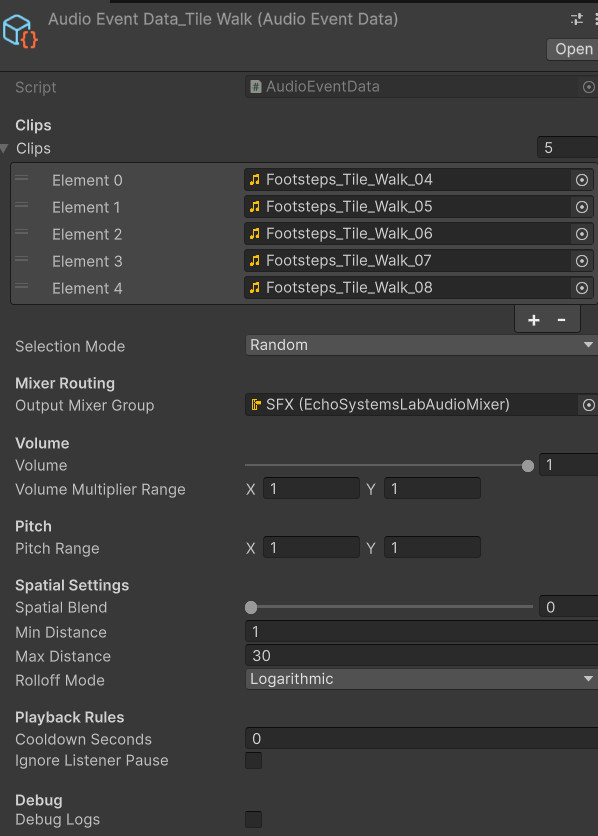
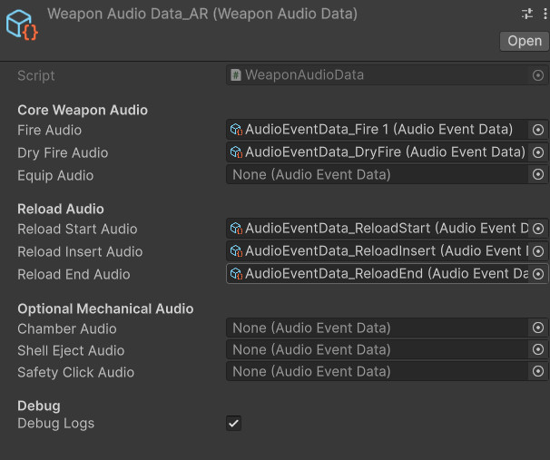
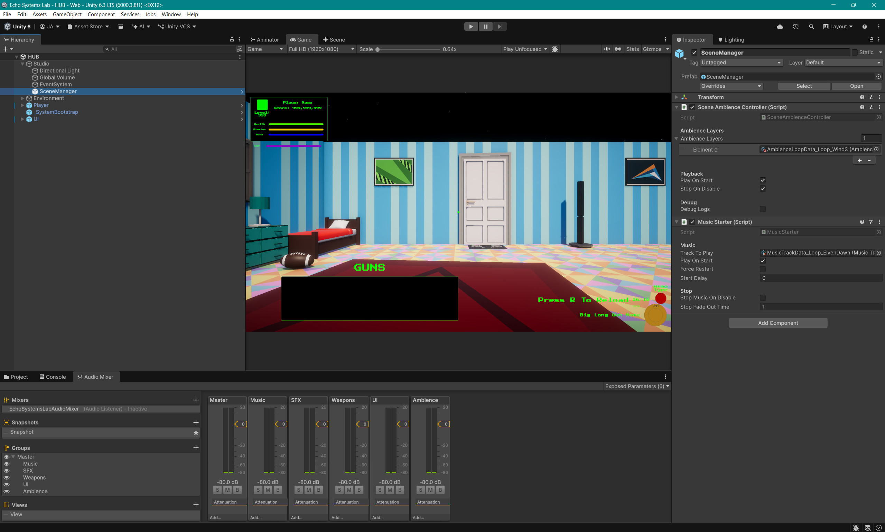
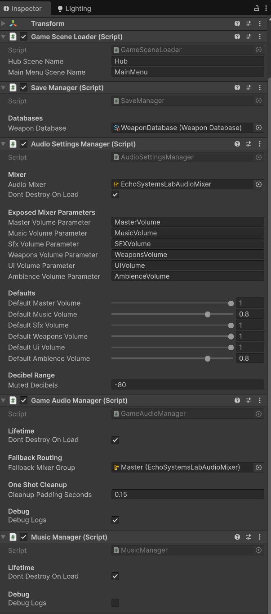
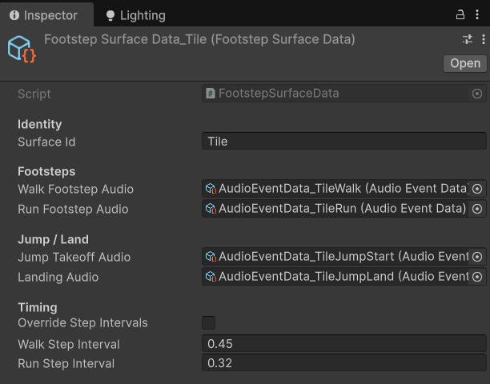

Audio Settings Menu
Player-facing sliders connect to exposed mixer parameters for master, music, SFX, weapons, UI, and ambience volume.
- Settings UI
- Audio Mixer
- Volume Control
A reusable Unity audio architecture for one-shot sound events, weapon audio, music playback, ambience loops, UI sounds, footsteps, mixer routing, and player-facing volume settings.
The audio subsystem turns raw sound clips into reusable, routed, tunable gameplay feedback.
The Echo Systems Lab audio subsystem separates audio playback from gameplay logic. Instead of placing raw AudioClip arrays directly inside every weapon, button, menu, and player script, the project uses reusable audio data assets that describe how sounds should be selected, routed, pitched, spatialized, throttled, and played.
The central GameAudioManager handles one-shot playback for gameplay, UI, weapons, footsteps, and other short sounds. MusicManager handles looping tracks and crossfades. SceneAmbienceController handles layered environmental loops. AudioSettingsManager connects player-facing sliders to exposed AudioMixer parameters.
This keeps audio flexible as the project grows. A weapon can fire, reload, dry fire, and equip using different audio events. A menu can bind hover and click sounds automatically. A floor surface can define its own footstep, jump, and landing sounds. The result is less audio clutter in gameplay scripts and a cleaner tuning workflow in the Inspector.
Provide reusable audio playback, mixer routing, volume settings, ambience, music, UI feedback, weapon sounds, and footsteps.
Gameplay event → Audio data lookup → Manager playback → Mixer routing → Player hears readable feedback.
Demonstrates subsystem design, ScriptableObject-driven tuning, audio routing, UI settings, and feedback architecture.
Screenshot references for audio settings, audio event data, weapon audio data, mixer routing, music, ambience, footsteps, and UI audio binding.
Player-facing sliders connect to exposed mixer parameters for master, music, SFX, weapons, UI, and ambience volume.

Reusable audio event assets define clip selection, pitch variation, volume variation, mixer routing, cooldown, and spatial settings.

Weapon sounds are grouped into data assets so fire, dry fire, equip, reload, chamber, shell eject, and safety clicks stay modular.

Mixer groups separate sound categories so player settings can control broad audio layers without touching individual clips.

MusicManager uses two AudioSources for crossfading tracks and MusicStarter objects let scenes request music cleanly.

Footstep surface data lets floor objects define walk, run, jump, and landing audio through scene tags and raycast detection.
The system keeps playback logic centralized while letting each feature request the sound it needs.
A weapon fires, reload starts, a UI button is clicked, the player lands, or a scene starts music.
The calling system reads a relevant ScriptableObject such as AudioEventData, WeaponAudioData, UIAudioData, MusicTrackData, or FootstepSurfaceData.
GameAudioManager handles one-shots, MusicManager handles tracks, and SceneAmbienceController handles ambience layers.
Sounds flow into mixer groups like Weapons, UI, Music, SFX, or Ambience so settings can adjust categories independently.
Audio events can randomize clip, volume, and pitch so repeated sounds avoid becoming a tiny robotic woodpecker.
One-shot audio objects destroy themselves after playback, keeping the scene free of invisible sound debris.
Each audio script handles one lane of responsibility so the subsystem stays expandable.
Defines reusable one-shot behavior: clip selection, random or sequential playback, mixer output, volume range, pitch range, spatial settings, cooldown, and pause behavior.
Central one-shot playback service. It creates temporary AudioSource objects, applies audio event settings, plays the selected clip, and destroys the object after playback.
Loads and saves volume settings, converts normalized slider values to decibels, and applies them to exposed AudioMixer parameters.
Groups weapon-related audio events so each weapon can define fire, dry fire, equip, reload start, reload insert, reload end, chamber, shell eject, and safety click sounds.
Plays MusicTrackData assets, crossfades between tracks, supports loop settings, and persists across scenes through the bootstrap.
Plays one or more ambience loop layers for a scene, fading them in and out while keeping ambience setup separate from music.
Uses movement, grounded state, surface raycasts, and jump events to play walk, run, jump takeoff, and landing audio.
Automatically binds UI audio to buttons, sliders, toggles, and dropdowns so menus can gain feedback without manual wiring on every control.
The audio system is split into data, playback, settings, and feature-specific requesters.
AudioEventData is the core one-shot data unit. It describes what should play and how it should sound. GameAudioManager turns that data into a temporary AudioSource and handles playback details.
Higher-level systems use their own data wrappers. WeaponAudioData groups weapon sounds. UIAudioData groups menu sounds. FootstepSurfaceData groups surface-specific step and landing sounds. MusicTrackData and AmbienceLoopData handle longer looping audio.
AudioSettingsManager sits above all of this and controls mixer volume parameters, giving the player control over broad audio categories without changing individual asset values.
The mixer gives the player broad control while preserving per-sound tuning in data assets.
Controls the full audio output and acts as the final player-facing volume gate.
Controls looping music tracks managed by MusicManager and requested by MusicStarter objects.
Handles general sound effects that do not fit into more specific subgroups.
Separates weapon fire, reload, dry fire, equip, chamber, and related mechanical sounds.
Controls button clicks, hovers, toggles, sliders, dropdowns, menu open, menu close, and back sounds.
Controls scene ambience layers separately from music, allowing environmental tone to be tuned independently.
The subsystem covers four major audio families: weapons, footsteps, interface sounds, and long-form loops.
Weapon audio is routed through PlayerWeaponAudioController and WeaponAudioData. The weapon controller raises events when the weapon fires, dry fires, reloads, inserts a round, finishes reloading, or equips. The audio controller listens to those events and plays the appropriate data-driven sound.
Footsteps use surface data instead of hardcoded clips. The player raycasts down to find a FootstepSurfaceTag, then selects the current surface audio. This supports different walk, run, jump, and landing sounds for tile, grass, metal, wood, or future materials.
UIAudioBinder can attach sound behavior to buttons, sliders, toggles, and dropdowns. This keeps menu feedback consistent without manually wiring every button click by hand.
Music and ambience are separated. MusicManager handles major tracks and crossfades. SceneAmbienceController handles layered loops that belong to the current environment.
These dropdowns show the core reusable audio event data and one-shot playback manager. Most other audio pieces are best shown through Inspector screenshots because their value is in clean data wiring.
//-----AudioEventData.cs START-----
using UnityEngine;
using UnityEngine.Audio;
public enum AudioEventSelectionMode
{
Random,
Sequential
}
[CreateAssetMenu(
fileName = "AudioEventData_NewEvent",
menuName = "Echo Systems Lab/Audio/Audio Event Data")]
public class AudioEventData : ScriptableObject
{
[Header("Clips")]
public AudioClip[] clips;
public AudioEventSelectionMode selectionMode = AudioEventSelectionMode.Random;
[Header("Mixer Routing")]
public AudioMixerGroup outputMixerGroup;
[Header("Volume")]
[Range(0f, 1f)]
public float volume = 1f;
[Tooltip("Optional extra random multiplier applied after Volume.")]
public Vector2 volumeMultiplierRange = new Vector2(1f, 1f);
[Header("Pitch")]
public Vector2 pitchRange = new Vector2(1f, 1f);
[Header("Spatial Settings")]
[Range(0f, 1f)]
public float spatialBlend = 0f;
public float minDistance = 1f;
public float maxDistance = 30f;
public AudioRolloffMode rolloffMode = AudioRolloffMode.Logarithmic;
[Header("Playback Rules")]
[Tooltip("Prevents this AudioEventData from playing again until this cooldown expires.")]
public float cooldownSeconds = 0f;
[Tooltip("Useful for pause-menu UI sounds if you later use AudioListener.pause.")]
public bool ignoreListenerPause = false;
[Header("Debug")]
public bool debugLogs = false;
[System.NonSerialized] private int nextSequentialIndex;
[System.NonSerialized] private float nextAllowedPlayTime;
public bool TryGetClip(out AudioClip clip)
{
clip = null;
if (!CanPlay())
{
if (debugLogs)
Debug.Log($"{name} audio event blocked by cooldown.");
return false;
}
clip = SelectClip();
if (clip == null)
{
if (debugLogs)
Debug.LogWarning($"{name} audio event has no valid clip.");
return false;
}
MarkPlayed();
return true;
}
public void ApplyToAudioSource(AudioSource source, AudioMixerGroup fallbackMixerGroup)
{
if (source == null)
return;
source.playOnAwake = false;
source.loop = false;
source.outputAudioMixerGroup = outputMixerGroup != null
? outputMixerGroup
: fallbackMixerGroup;
source.volume = GetRandomVolume();
source.pitch = GetRandomPitch();
source.spatialBlend = Mathf.Clamp01(spatialBlend);
source.minDistance = Mathf.Max(0f, minDistance);
source.maxDistance = Mathf.Max(source.minDistance, maxDistance);
source.rolloffMode = rolloffMode;
source.ignoreListenerPause = ignoreListenerPause;
}
public float GetRandomPitch()
{
float minPitch = Mathf.Min(pitchRange.x, pitchRange.y);
float maxPitch = Mathf.Max(pitchRange.x, pitchRange.y);
return Random.Range(minPitch, maxPitch);
}
public float GetRandomVolume()
{
float minMultiplier = Mathf.Min(volumeMultiplierRange.x, volumeMultiplierRange.y);
float maxMultiplier = Mathf.Max(volumeMultiplierRange.x, volumeMultiplierRange.y);
float multiplier = Random.Range(minMultiplier, maxMultiplier);
return Mathf.Clamp01(volume * multiplier);
}
public float GetPlaybackDuration(AudioClip clip, float pitch)
{
if (clip == null)
return 0f;
float safePitch = Mathf.Max(0.01f, Mathf.Abs(pitch));
return clip.length / safePitch;
}
private bool CanPlay()
{
if (cooldownSeconds <= 0f)
return true;
return Time.unscaledTime >= nextAllowedPlayTime;
}
private void MarkPlayed()
{
if (cooldownSeconds <= 0f)
return;
nextAllowedPlayTime = Time.unscaledTime + cooldownSeconds;
}
private AudioClip SelectClip()
{
if (clips == null || clips.Length == 0)
return null;
switch (selectionMode)
{
case AudioEventSelectionMode.Sequential:
return SelectSequentialClip();
case AudioEventSelectionMode.Random:
default:
return SelectRandomClip();
}
}
private AudioClip SelectRandomClip()
{
if (clips == null || clips.Length == 0)
return null;
for (int i = 0; i < clips.Length; i++)
{
AudioClip clip = clips[Random.Range(0, clips.Length)];
if (clip != null)
return clip;
}
return null;
}
private AudioClip SelectSequentialClip()
{
if (clips == null || clips.Length == 0)
return null;
for (int i = 0; i < clips.Length; i++)
{
int index = nextSequentialIndex;
nextSequentialIndex++;
if (nextSequentialIndex >= clips.Length)
nextSequentialIndex = 0;
AudioClip clip = clips[index];
if (clip != null)
return clip;
}
return null;
}
}
//-----AudioEventData.cs END-----//-----GameAudioManager.cs START-----
using System.Collections;
using UnityEngine;
using UnityEngine.Audio;
public class GameAudioManager : MonoBehaviour
{
public static GameAudioManager Instance { get; private set; }
[Header("Lifetime")]
[SerializeField] private bool dontDestroyOnLoad = true;
[Header("Fallback Routing")]
[Tooltip("Used if an AudioEventData does not have an output mixer group assigned.")]
[SerializeField] private AudioMixerGroup fallbackMixerGroup;
[Header("One Shot Cleanup")]
[SerializeField] private float cleanupPaddingSeconds = 0.15f;
[Header("Debug")]
[SerializeField] private bool debugLogs = false;
private Transform oneShotRoot;
private void Awake()
{
if (Instance != null && Instance != this)
{
Destroy(gameObject);
return;
}
Instance = this;
if (dontDestroyOnLoad)
DontDestroyOnLoad(gameObject);
CreateOneShotRoot();
}
public AudioSource PlayOneShot(AudioEventData audioEvent)
{
return PlayOneShotInternal(
audioEvent,
transform.position,
null,
false);
}
public AudioSource PlayOneShotAtPosition(AudioEventData audioEvent, Vector3 worldPosition)
{
return PlayOneShotInternal(
audioEvent,
worldPosition,
null,
true);
}
public AudioSource PlayOneShotAttached(AudioEventData audioEvent, Transform parent)
{
Vector3 position = parent != null
? parent.position
: transform.position;
return PlayOneShotInternal(
audioEvent,
position,
parent,
parent != null);
}
private AudioSource PlayOneShotInternal(
AudioEventData audioEvent,
Vector3 worldPosition,
Transform parent,
bool useWorldPosition)
{
if (audioEvent == null)
return null;
if (!audioEvent.TryGetClip(out AudioClip clip))
return null;
GameObject audioObject = new GameObject($"AudioEvent_{audioEvent.name}");
if (parent != null)
{
audioObject.transform.SetParent(parent);
audioObject.transform.localPosition = Vector3.zero;
audioObject.transform.localRotation = Quaternion.identity;
}
else
{
audioObject.transform.SetParent(oneShotRoot);
audioObject.transform.position = useWorldPosition ? worldPosition : transform.position;
audioObject.transform.rotation = Quaternion.identity;
}
AudioSource source = audioObject.AddComponent<AudioSource>();
audioEvent.ApplyToAudioSource(source, fallbackMixerGroup);
source.clip = clip;
source.Play();
float duration = audioEvent.GetPlaybackDuration(clip, source.pitch);
StartCoroutine(DestroyAfterPlayback(audioObject, duration + cleanupPaddingSeconds));
if (debugLogs)
Debug.Log($"Played audio event: {audioEvent.name} / Clip: {clip.name}");
return source;
}
private IEnumerator DestroyAfterPlayback(GameObject audioObject, float delaySeconds)
{
if (delaySeconds > 0f)
yield return new WaitForSecondsRealtime(delaySeconds);
if (audioObject != null)
Destroy(audioObject);
}
private void CreateOneShotRoot()
{
if (oneShotRoot != null)
return;
GameObject rootObject = new GameObject("OneShotAudioRoot");
rootObject.transform.SetParent(transform);
rootObject.transform.localPosition = Vector3.zero;
rootObject.transform.localRotation = Quaternion.identity;
oneShotRoot = rootObject.transform;
}
}
//-----GameAudioManager.cs END-----This system came from cleaning audio out of gameplay scripts and giving sound its own proper machinery.
Early weapon audio could work when sounds were directly attached to weapon handling or gameplay scripts, but that approach started to create duplicated fields, unclear routing, and scattered playback logic.
Moving audio into reusable data assets made the system easier to inspect and tune. A reload sound failing was no longer a code mystery. It could be checked directly in the AudioEventData asset, where missing clips, routing, cooldowns, pitch, and volume settings are visible.
The persistent bootstrap also made audio more reliable across scene changes. Music, settings, save systems, and one-shot playback can live on the root bootstrap object, avoiding duplicate managers and scene-specific setup traps.
Replaced raw clip references spread across gameplay scripts with reusable audio event data.
Audio event assets make missing clips, cooldowns, routing, and pitch settings easy to inspect.
Core audio managers live under the bootstrap so they can persist cleanly between hub, menu, and trial scenes.
The audio subsystem shows that feedback systems are architecture too, not just polish added at the end.
AudioEventData, WeaponAudioData, UIAudioData, MusicTrackData, AmbienceLoopData, and FootstepSurfaceData make audio behavior configurable.
Weapons, UI, movement, music, and ambience request audio without owning low-level playback and cleanup logic.
Mixer-backed settings give players category-level control over music, SFX, weapons, UI, and ambience.
Missing clips and routing issues are visible in Inspector assets instead of buried inside controller branches.
New weapons, surfaces, menus, tracks, and scenes can plug into the same audio framework.
The subsystem demonstrates event-based feedback, persistence, data-driven tuning, and player-facing settings.